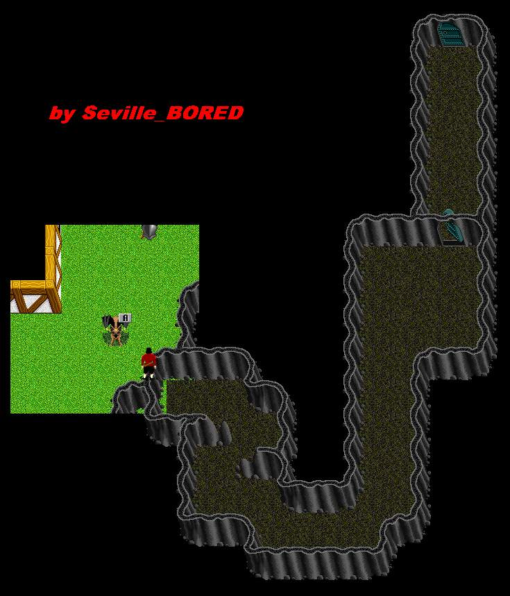

 |
| Lori Cave |
| Back to Cobrahn. |
| To the East of Loriapi's Hut is a secret passage that leads to 2 locked doors. The first door can be picked by a good Thief, but the second needs a key or a really good Thief. This cave also provides a safe place to stage attacks on Loriapi's Hut. Somebody told me that this is a part of the game that no longer exists. Tales of a NPC trader that has a +6 Short Sword were spoken. Probally rumor. |